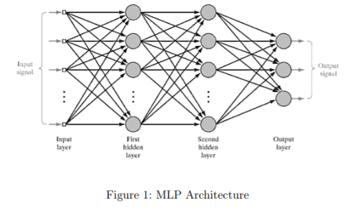
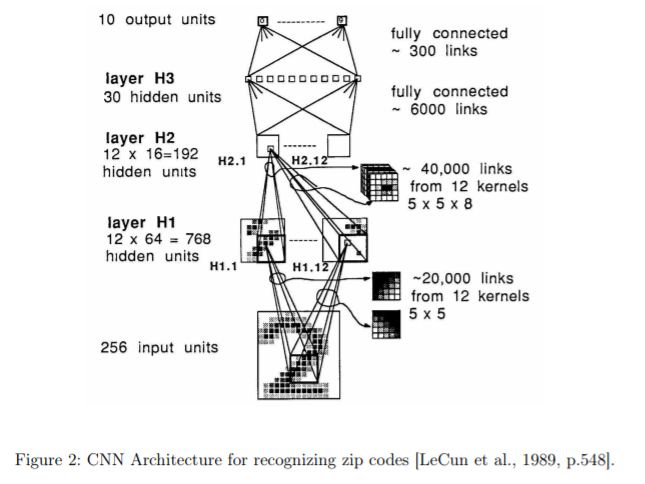
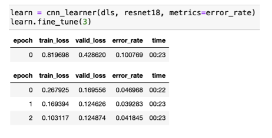
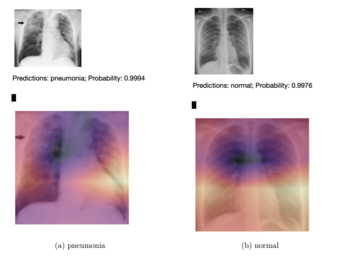

Why did a machine learning system
decide like that?
While on my Erasmus in Sweden I took a module in Artificial Intelligence and Machine Learning.
for this module we had to create an intelligent system. We had free reign to do whatever
project we wanted. Another student and I decided to team up and create an intelligent system
that could detect the presence of pneumonia in a chest x-ray.
To do this we used two types of neural networks; Multi-Layer Perceptron (MLP) and Convoluted Neural Network (CNN).


Above are some images of both an MLP and a CNN. To
train the systems we first needed to get some data. We used a dataset
from kaggle, the world's largest data science community. Here we were able to get
a dataset full of x-rays which were broken into having pneumonia and not having pneumonia.
After we had this it was time to train. We simply gave the systems many pictures and they started to spot trends
and from here they were able to classify.
The results were as followed:

Figure 3: Training the system.

Figure 4: Results from testing
As you can see from figure 3 one can see that the CNN has an 0.4% error rate and in figure 4 you can
see that the system was able to predict correctly the absence or presence of pneumoniawith over 99% accuracy.
This was an extremely fun and interesting project. Although I would not consider myself
an expert just yet I belive that this project has set me up well for the next time I encounter Artificial Intelligence.